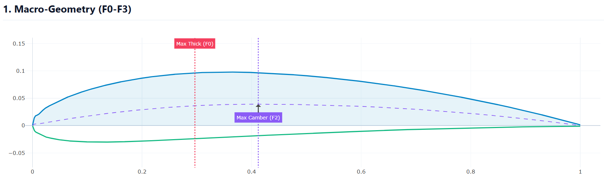
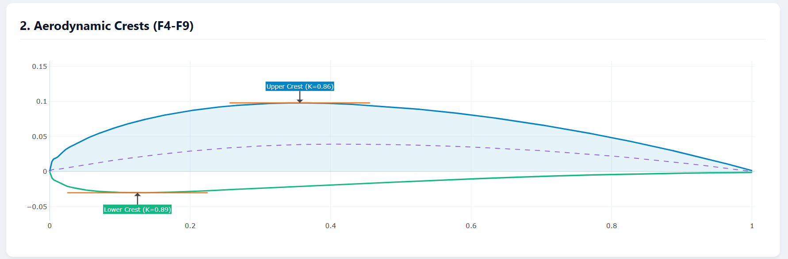
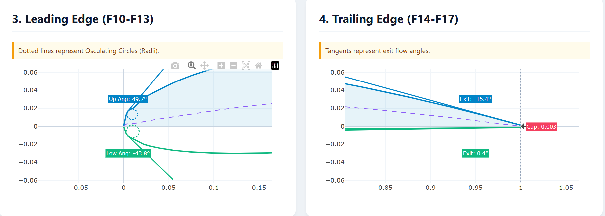
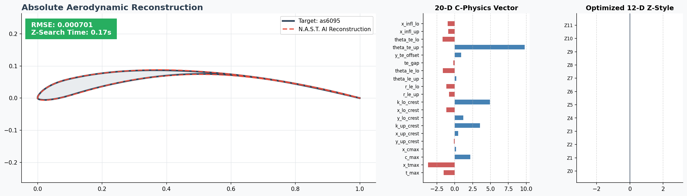
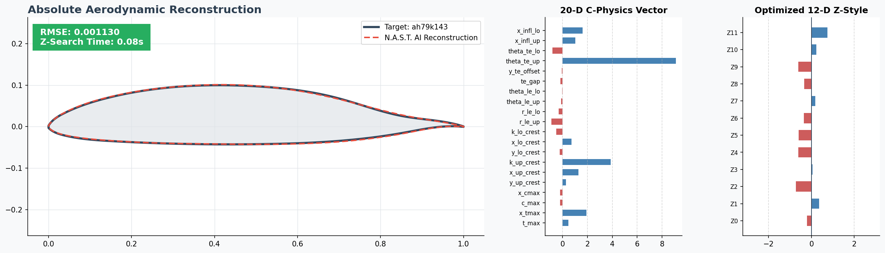
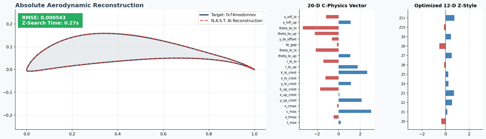
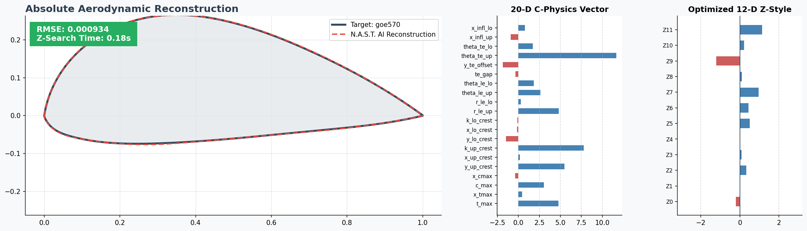

N.A.S.T.
Neural Aerodynamic Shape Transformation Framework
1. The Crisis of Traditional Parameterization
Historically, aerodynamicists have relied on mathematical polynomials like PARSEC, Hicks–Henne, or Class Shape Transformation (CST) to define airfoils. Yet polynomials are mathematically blind to fluid dynamics.
The Exploitation of Polynomials
When optimization algorithms manipulate polynomial variables to maximise Lift-to-Drag (L/D) ratios, they relentlessly exploit mathematical blind spots. The result: jagged leading edges, crossed boundary lines, and microscopically rippled surfaces — shapes polynomials allow, but physics forbid.
The CFD Crash Cascade
These “broken” geometries are passed to strict CFD solvers
like XFOIL or OpenFOAM. Meshing
algorithms catastrophically fail, returning NaN matrices
and destroying the entire optimisation loop.
2. The N.A.S.T. Solution
N.A.S.T. abandons polynomials entirely.
Powered by a Physics-Informed Deep Neural Network trained on
a mathematically “healed” database of over 700,000 real-world
aerodynamic topologies, the engine only knows how to generate viable,
aerodynamically sound airfoils.
Aerodynamicists gain explicit, deterministic control over the wing via a revolutionary 32‑Dimensional Parameterisation Matrix:
The Skeleton (20 C‑Features)
Explicit, real‑world physical constraints mapped to direct aeronautical requirements: Max Thickness, Leading‑Edge Radii, Upper/Lower Crest Locations, Trailing‑Edge Gaps, and Camber profiles.
The Style (12 Z‑Features)
Abstract, multi‑dimensional “Latent” variables governing the internal Neural Manifold. They control curve tension, mass distribution, and subtle aerodynamic styling between the rigid structural constraints of the Skeleton.
3. Visualising the Engine Capabilities
3.1 Constraining the Geometry




3.2 AI Validation Against Real‑World Airfoils




4. Repository Architecture
The N.A.S.T. framework is organised into a clean, modular hierarchy, strictly isolating the core mathematical inference engine from the documentation and global datasets.
NAST_Project/
│
├── NAST_Scr/ # Core AI & Mathematical Engine
│ ├── nast_advanced_gen.py # Macro/Micro Synthesis Engine CLI
│ ├── nast_master_cli.py # Unified Inversion & Generation Router
│ ├── train_nast_infinite.py # Automated AI Training Pipeline
│ ├── nast_decoder.onnx # Compiled Neural Network Brain
│ ├── nast_decoder.onnx.data # Extended ONNX weight tensors
│ ├── nast_normalization.npz # Mathematical normalisation matrices
│ └── NAST_Global_DNA_Library.json # 32‑D Math Dictionary of 700k airfoils
│
├── Foil_Folder/ # Reference Aerodynamic Data
│ └── NACA0012.dat # Sample target file for AI Inversion
│
├── docs/ # Comprehensive Documentation Library
│ ├── 01_Introduction.md # Framework Overview & Paradigm shift
│ ├── 02_Advanced_Gen_Examples.md # Parametric Manipulation CLI guides
│ ├── 03_Master_CLI_Examples.md # L‑BFGS‑B Inversion algorithms
│ ├── 04_Data_Outputs.md # XFOIL .dat, CAD .dxf, and CSV exporting
│ └── 05_Theory_and_Math.md # The Calculus behind the β‑VAE
│
├── test_cli_suite.py # Automated QA Testing Suite
└── requirements.txt # Python Dependency Blueprintpython test_cli_suite.py at any time to trigger the automated
QA engineer. It executes 10 complex operations to guarantee parameter
overrides, interpolation splines, and export formats function flawlessly
on your local hardware.
5. Quick Start: Hello World
Get N.A.S.T. running locally and generate your first AI‑driven airfoil in under 60 seconds.
Step 1: Installation
Clone the repository and install the highly optimised scientific computing dependencies. (Using a virtual environment is highly recommended.)
git clone https://github.com/Gamil-Al-Sharif/NAST_Project.git
cd NAST_Project
pip install -r requirements.txtStep 2: Synthesise Your First Airfoil
Use the Advanced Generator CLI to synthesise a completely novel airfoil.
In this command, we instruct the AI to generate a 15% thick,
4% cambered wing, mapped onto a 200‑point Half‑Cosine
grid, instantly exporting it to an XFOIL .dat format
and a .png plot.
python NAST_Scr/nast_advanced_gen.py \
--name "Hello_NAST" \
--output_dir NAST_Output \
--t_max 0.15 \
--c_max 0.04 \
--points 200 \
--spacing half-cosine \
--export_selig \
--export_plot6. Deep Dive Documentation
To truly master the N.A.S.T. framework, explore our comprehensive Markdown
documentation located in the docs/ folder. It contains over
40 copy‑and‑paste CLI examples and deep theoretical explanations.
-
20+ Examples for
nast_advanced_gen.pyLearn how to synthesise Supersonic Needle‑Noses, Thick Heavy‑Lifters, and explicitly control Z‑Space Latent styling.View on GitHub -
20+ Examples for
nast_master_cli.pyLearn how to use the L‑BFGS‑B optimizer to “Clone” real‑world airfoils, extract their JSON DNA, and mathematically heal noisy wind‑tunnel data.View on GitHub -
Data Outputs & Formats GuideA technical guide to exporting airfoils directly into XFOIL (View on GitHub
.dat), Pandas Machine Learning DataFrames (.csv), and SolidWorks/AutoCAD (.dxf). -
Math Format & β‑VAE TheoryThe rigorous analytical calculus behind the 20‑Feature Extractor, and the deep‑learning mathematics of the Disentangled KL Divergence loss functions.View on GitHub
7. About the Developers
Gamil Abdullah Al‑Sharif
Mechanical Engineer & AI R&D Specialist • Sana’a, Yemen
Yhya Abdullah Al‑Wazir
Mechanical Engineer & AI R&D Specialist • Sana’a, Yemen